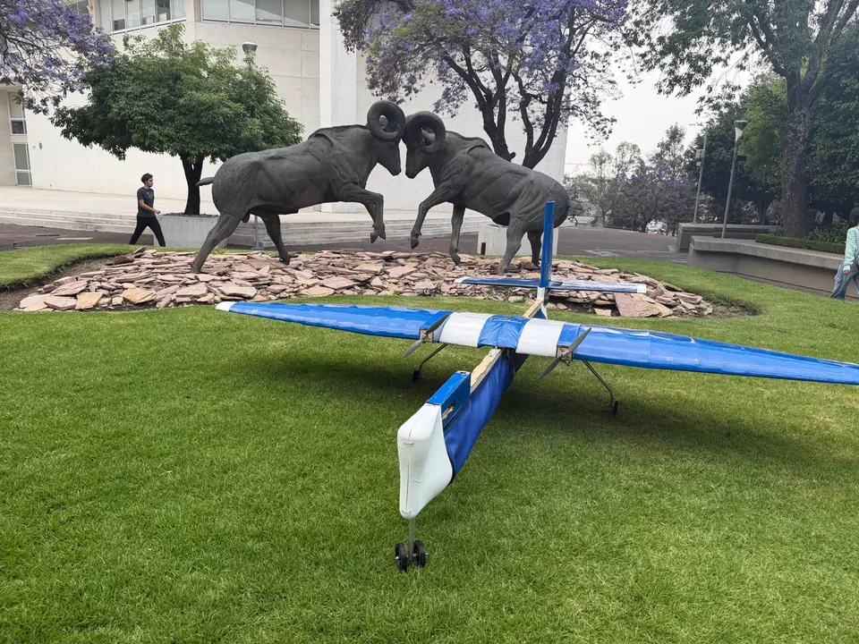
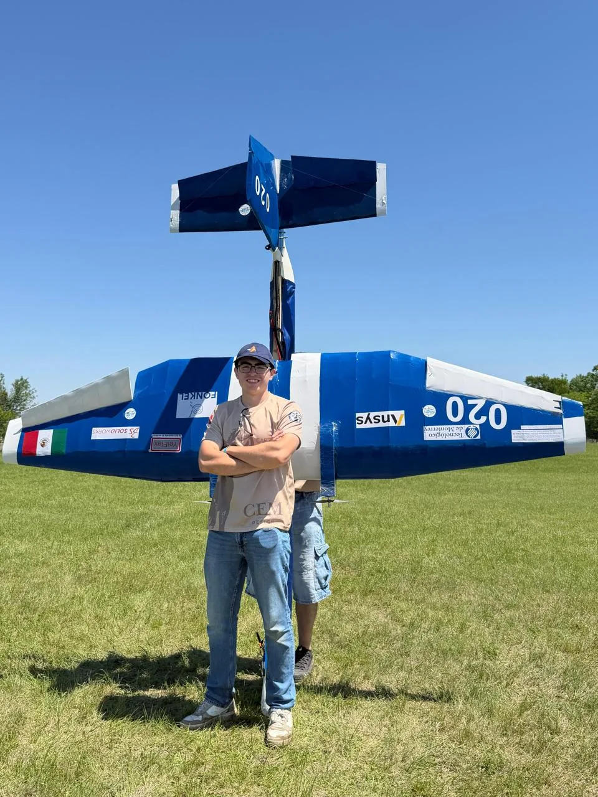
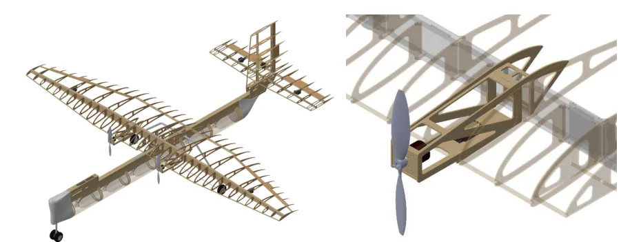
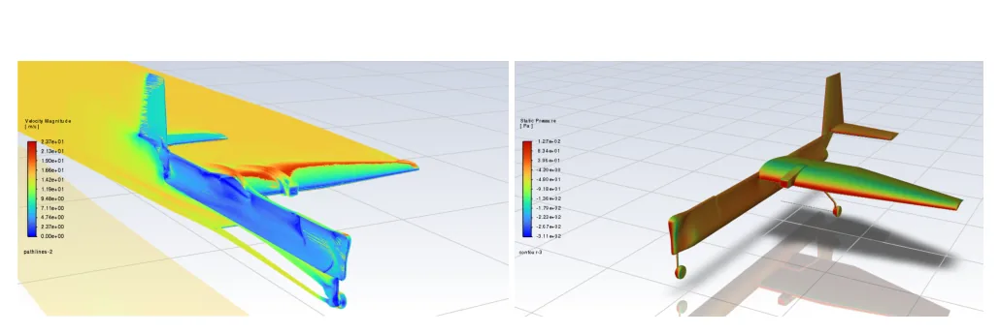
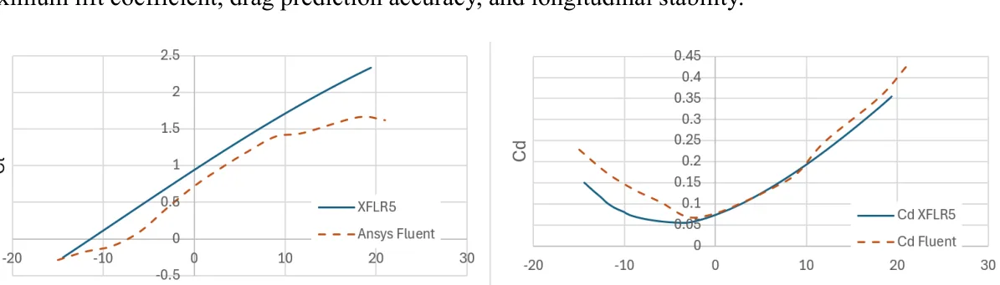
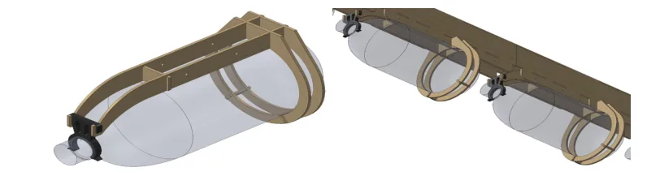
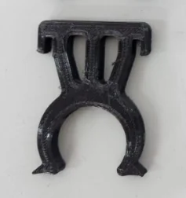
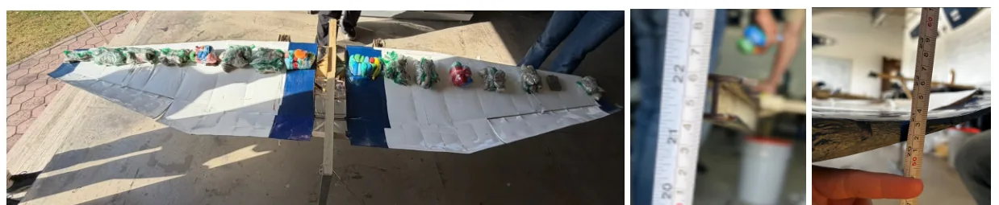

A twin-engine cargo aircraft shaped by integration, analysis and testing.
Design Captain & Engineering Coordinator · Borregos CEM AeroDesign, Tecnológico de Monterrey
~7 kgEmpty mass in flown configuration
~6 kgDemonstrated payload
300+CAD parts I worked on
40+Members on the team

Latías · the team's first twin-engine competition aircraft.

Roberto with Latías after flight testing.
01 / ENGINEERING CHALLENGE
Carry bottles reliably, then repeat the mission.
Regular Class required an internal bottle payload and a takeoff within the competition limit. The team had to balance payload capacity, low-speed performance, stable handling and a practical loading process within a twin-engine electric airframe. We sized for competition weather scenarios and tested locally in Atizapán, where high density altitude, uneven pavement and wind made takeoff more demanding.
RequirementInternal bottle payload and repeatable flight
Trade-offMass, center of gravity, propulsion and structural interfaces
EvidenceModels, ground tests and flown missions
02 / MY CONTRIBUTION
Design work and coordination across disciplines.
Personally developed
I worked on conceptual architecture, detailed CAD, aerodynamic studies, CFD, propulsion selection and the PETG bottle retainer. I personally worked on more than 300 CAD parts across the project; the complete assemblies contained more than 400 components.
Coordinated with the team
I led a design group of roughly five within a team of more than 40. As Engineering Coordinator, I reviewed requirements and interfaces with structures, electronics and R&D, and participated in integration and tests. Structural calculations were performed by the structures team.
03 / ANALYSIS → DESIGN DECISION
Balance across empty and loaded states.
Stability studies favored an empty-aircraft CG near 30% mean aerodynamic chord: targeting 25% in that configuration would have demanded a larger horizontal stabilizer. With full payload, the planned CG shifted forward toward 25%, increasing the static margin. We assessed both configurations before fixing the aircraft layout and battery location.
The CG decision came from stability and mass-property analysis. The CAD and aerodynamic figures below show analytical work, not flight-test measurements.

Integrated CAD layout and subsystem packaging, from the team design report.

CFD flow and pressure fields. Simulated behavior, with model limitations at high angle of attack.

VLM and CFD comparison used to assess aerodynamic estimates; the methods diverged more at higher angles of attack.
CFD-derived drag coefficients also fed the takeoff-run estimate and density-altitude payload planning. We used those calculations to set test thresholds for Atizapán; no quantitative CFD-to-flight correlation was measured.
04 / SYSTEMS INTEGRATION
The battery location was a whole-aircraft decision.
Electrical preference
Place the battery near the motors for shorter, simpler wiring.
Aircraft constraint
Move mass forward to meet the required balance and CG range.
Integrated solution
Position the battery at the nose and route the longer wiring through organizers for controlled placement.

Internal bottle supports integrated with the fuselage; CAD from the team design report.
A small part with a measurable test plan
The first PETG bottle retainer used near-concentric radii. Bottles were hard to insert and the part sometimes fractured. I revised the outer radius and added offset geometry and tabs so operators could open it by hand. In handling tests, insertion became easier while removal still resisted accidental release; we did not measure insertion force.
Iteration 01 · original PETG geometry.

Iteration 02 · revised radius, offset and tabs.
The revised part completed approximately 50 insertion cycles and a prolonged static-load check under the tested conditions. Those checks do not establish a long-term creep lifetime.
05 / PHYSICAL VALIDATION
Ground evidence, then flight.
Wing loading
The structures team distributed weight across the inverted wing to approximate the planned lift distribution. The report recorded 1.04 cm calculated beam deflection, 1.32 cm measured beam deflection and 4.52 cm measured total wing deflection. The beam comparison differs by roughly 27%; the assembly was not loaded to failure.

Distributed wing-load setup and deflection readings from the design report.
Fuselage and landing gear
A 12 kg test configuration was suspended from its CG and dropped from a calculated height of 11.04 cm. The team reported no visible cracks, fractures or permanent deformation after the test.
Ground test · distinct from the later flown payload configuration.
Flight under local conditions
At Atizapán we translated the competition takeoff requirement to local air conditions and checked whether the aircraft became airborne within the adjusted threshold. We did not log precise takeoff distances for a model-error comparison.
Latías later flew with approximately 6 kg of payload at approximately 7 kg empty mass. This footage documents the aircraft in flight; the video alone does not establish the payload mass.
Local flight test · Atizapán, Estado de México.
06 / RESULTS
Built, tested and flown.
~6 kgPayload demonstrated in flight
6thTechnical presentation
16thDesign report
16thOverall · SAE Aero Design West 2026
The pre-competition design report recorded 6.8 kg empty mass and an 11.98 kg maximum takeoff configuration. The approximate 7 kg empty / 6 kg payload figures above refer to the later demonstrated flight configuration and are not measurements from that report.
Engineering takeaways
Evaluate CG and stability across every payload state, not only the empty aircraft.
Resolve component placement with both electrical routing and aircraft balance in view.
Pair simulation with targeted ground and flight checks, and state what each check actually demonstrates.